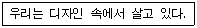
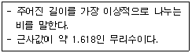
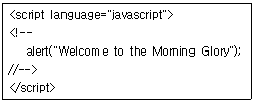
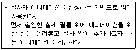
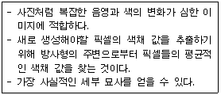
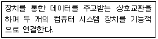
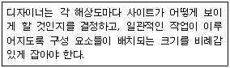

웹디자인기능사 (2012-04-08 기출문제)
1과목: 디자인 일반
1. 입체에 대한 설명으로 옳지 않은 것은?
- 소극적 입체는 현실적 형, 확실히 지각되는 형을 말한다.
- 입체는 면이 이동한 자취이다.
- 두 면과 각도를 가진 방향으로 이동하거나 면의 회전에 의해 생긴다.
- 순수한 입체는 구, 원통, 육면체 등과 같은 형이다.
(정답률: 76%)

2. 다음 중 각 부분 사이에 시각적인 강한 힘과 약한 힘이 규칙적으로 연속될 때에 생기는 디자인의 원리는?
- 조화
- 율동
- 균형
- 강조
(정답률: 71%)
3. 다음 중 제품 디자인(Product Design) 분야로 거리가 먼 것은?
- 영상 디자인
- 완구 디자인
- 가전 디자인
- 가구 디자인
(정답률: 93%)
4. 다음과 관계있는 디자인의 개념은?

- 디자인은 고도로 복잡하고 세련된 숙련이다.
- 디자인은 항상 어떤 가능성을 전제로 시작된다.
- 디자인은 모든 사람의 일상이다.
- 디자인은 예술이다.
(정답률: 92%)
5. 형태에 관한 시각의 기본 법칙을 내포한 게슈탈트(Gustalt) 심리적 원리가 옳은 것은?
- 연속성, 근접성, 유사성, 폐쇄성
- 유사성, 연속성, 개방성, 폐쇄성
- 근접성, 개방성, 전경과 배경의 법칙
- 유사성, 이성적, 개방성, 접근성(근접성)
(정답률: 86%)
6. 색채를 과학적으로 정리하여 스펙트럼을 7색으로 분리한 사람은?
- 뉴턴
- 먼셀
- 오스트발트
- 돈더스
(정답률: 84%)
7. 신인상파 화가인 쇠라(Georges Seurat)의 작품인 “그랑자트섬의 일요일 오후”에서 사용된 색의 혼합은?
- 회전 혼합
- 가산 혼합
- 색료 혼합
- 병치 혼합
(정답률: 73%)
8. 색의 감정에서 저채도의 배색이 주는 느낌은?
- 부드러운 느낌
- 명쾌한 느낌
- 화려한 느낌
- 활기찬 느낌
(정답률: 91%)
9. 디자인에 통일성을 부여하는 방법으로 거리가 먼 것은?
- 각 요소들을 근접시킨다.
- 각 요소들을 반복시킨다.
- 각 요소들을 연속시킨다.
- 각 요소들을 분리시킨다.
(정답률: 90%)
10. 다음은 민들레꽃의 홀씨에 대한 그림이다. 이 그림에서 느낄 수 있는 디자인 원리는?
- 율동
- 착시
- 조화
- 균형
(정답률: 90%)
11. 먼셀 색입체에 대한 설명으로 틀린 것은?
- 색상, 명도 채도의 3속성 3차원 좌표에서 색 감각으로 보는데 용이하다.
- CIE의 색표와 연관성이 용이하다.
- 실제로 사용하고 있는 모든 물체색이 색입체에 포함되어 있지 않다.
- 모든 색상의 채도 위치가 달라 배색체계를 응용하기 어렵다.
(정답률: 52%)
12. 검은 종이 위에 노랑과 파랑을 나열하고 일정한 거리에서 보면 파랑이 노랑보다 더 멀게 보인다. 이때의 파랑색을 무엇이라고 하는가?
- 후퇴색
- 팽창색
- 진출색
- 수축색
(정답률: 86%)
13. 다음이 설명하고 있는 것은?

- 비례
- 황금비율
- 루트사각형
- 프로포션
(정답률: 94%)
14. 고층 빌딩의 창문크기, 고가 도로의 난간 및 도로, 가로등을 원근법을 적용하여 표현하고자 할 때 가장 유의해야 할 디자인 원리는?
- 점증
- 조화
- 대칭
- 균형
(정답률: 73%)
15. 다음 그림에서 왼쪽 원을 보다가 오른쪽 원을 볼 때 나타나는 현상은?
- 대비
- 잔상
- 배색
- 혼합
(정답률: 81%)
16. ‘빅터 파파넥(Victor Papanek)’ 이 주장한 디자인의 복합 기능에 포함되지 않는 것은?
- 방법
- 연상
- 효과
- 미학
(정답률: 46%)
17. 다음 중 빨간색이 가장 선명하고 뚜렷해 보일 수 있는 배경색으로 적합한 것은?
- 주황
- 노랑
- 흰색
- 보라
(정답률: 84%)
18. 디자인의 독창성에 대한 설명으로 가장 옳은 것은?
- 정해진 비용으로 최상의 디자인을 창출하는 것을 말한다.
- 디자인을 할 때 목적에 맞는 수단을 사용하였는지를 말한다.
- 보다 실용적이고 심미적으로 대선, 발전시키는 것을 말한다.
- 개성적인 미의식을 창출해내는 것을 말한다.
(정답률: 79%)
19. 디자인 원리 중 서로 다른 부분의 조합에 의해 생기며 시각적 힘의 강약에 의한 형의 감정 효과를 주는 것은?
- 대비
- 변칙
- 통일
- 반복
(정답률: 66%)
20. 다음 중 웹디자인이 속하는 디자인 분야는?
- 제품 디자인
- 환경 디자인
- 시각 디자인
- 건축 디자인
(정답률: 88%)
2과목: 인터넷 일반
21. 검색엔진 구글(google)에 대한 설명으로 틀린 것은?
- 레리 페이지와 데이비드 필로의 의해 만들어졌다.
- 키워드 검색 방식을 사용하고 있다.
- 스톱워드 사용으로 검색 속도가 빠르다.
- 저장된 페이지를 이용한 미리보기 기능을 제공한다.
(정답률: 51%)
22. HTML 문서에 대한 정보를 제공하는 자바스크립트 객체는?
- frame
- history
- location
- document
(정답률: 81%)
23. HTML 문서에서 하이퍼링크 설정 시 새로운 창을 열어 문서를 연결하는 속성을 지정하고자 한다. ①에 들어갈 옵션으로 옳은 것은?
- _self
- _parent
- _top
- _blank
(정답률: 77%)
24. 다음 중 데이터 종신의 교환 기술에 있어 전송 대역폭을 비교 기준으로 선택할 경우 다른 것과 구별되는 방식은?
- 메시지 교환 방식
- 데이터그램 패킷 교환
- 가상 회선 패킷 교환
- 회선 교환
(정답률: 52%)
25. 다음 중 인트라넷의 장점에 해당하지 않는 것은?
- 저렴한 구축비용
- 특정 플랫폼만을 지원
- 사내 표준화
- 표준화된 문서 환경
(정답률: 73%)
26. 웹디자인에서 내비게이션에 대한 설명으로 틀린 것은?
- 웹 콘텐츠를 분류하고 체계화시킨 후 이들을 연결시켜 방문자로 하여금 웹사이트를 이용할 수 있게 하는 체계를 말한다.
- 일관성 있는 아이콘과 그래픽을 사용하여 사용자가 홈페이지 어디서라도 길을 잃지 않고 필요한 정보를 쉽게 얻을 수 있도록 하는 것이다.
- 웹 사이트의 전체적인 분위기를 결정하고 개인의 홍보나 회사의 홍보, 또 사용자간의 자발적 참여와 커뮤니티를 형성한다.
- 사이트의 이동경로나 이동방법, 이동을 돕는 구조와 인터페이스를 모두 포함하는 개념이다.
(정답률: 78%)
27. 전자메일 서비스에 연관된 프로토콜(Protocol)이 아닌 것은?
- IMAP
- NNTP
- POP3
- SMTP
(정답률: 72%)
28. 자신이 원하는 정보나 특정한 목적을 이루기 위하여 인터넷을 이용해서 정보를 취득하는 일련의 작업을 의미하는 것은?
- 검색엔진
- 정보검색
- 월드 와일드 웹
- 위즈윅
(정답률: 80%)
29. Java 스크립트 언어에 대한 설명으로 틀린 것은?
- Java 스크립트 언어에서 변수명을 숫자 및 특수 문자로 시작할 수 없다.
- Java 스크립트 언어는 HTML과 웹 브라우저와는 상호작용할 수 있지만, VRML과 같은 인터넷 자원과는 상호작용할 수 없다.
- Java 스크립트 언어는 대소문자를 구분한다.
- 함수 eval()는 Java 스크립트의 내장함수이다.
(정답률: 67%)
30. 인터넷 익스플로러 6.0에서 한글 파일명으로 저장된 웹페이지나 그림이 정상적으로 표시도지 않을 경우 해결하는 방법은?
- [도구] 메뉴의 [인터넷 옵션]-[고급]에서 「URL을 항상 UTF-8로 보냄」항목을 해제한다.
- [도구] 메뉴에서 [인터넷 업데이트]를 선택한다.
- [도구] 메뉴의 [인터넷 옵션]-[고급]에서 「필요할 때 추가 기능 설치 가능」을 선택한다.
- [도구] 메뉴의 [인터넷 옵션]-[고급]에서 「SSL3.0」을 선택한다.
(정답률: 63%)
31. HTML 문서 내에서 전자 메일에 대한 링크를 설정하려고 할 때 옳은 것은?
- ＜a href=“mail:korea@hrdkorea.or.kr”＞
- ＜a href=“mailto:korea@hrdkorea.or.kr”＞
- ＜a href=“mailsend:korea@hrdkorea.or.kr”＞
- ＜a href=“http://korea@hrdkorea.or.kr”＞
(정답률: 54%)
32. 다음과 같은 자바스크립트 소스를 헤드(head)태그 안에 삽입 시 브라우저에서 적용되는 결과는?

- 페이지가 열릴 때 자동으로 Welcome to the Morning Glory라는 문구가 있는 메시지 창이 뜬다.
- 페이지가 열릴 때 Welcom to the Morning Glory라는 플래시가 출력된다.
- 페이지가 열릴 때 Welcome to the Morning Glory라는 문구가 한자씩 브라우저에 새겨진다.
- 페이지가 열릴 때 Welcome to the Morning Glory라는 문구가 이메일로 보내진다.
(정답률: 80%)
33. 종합 통신망이라고 하며, 하나의 회선으로 전화, 팩스, 통신 등 여러 가지 통신 서비스를 제공해 주는 것은?
- LAN
- WAN
- MAN
- ISDN
(정답률: 57%)
34. 인터넷의 시초인 알파넷(ARPANET)은 어떠한 필요성에 의해 만들어졌는가?
- 군사적인 필요성
- 사업적인 필요성
- 학술적인 필요성
- 오락적인 필요성
(정답률: 87%)
35. abc 대학교의 웹 페이지 주소 표기로 옳은 것은?
- http://www.abc.ac.kr
- http://www.abc.re.kr
- http://www.abc.go.kr
- http://www.abc.co.kr
(정답률: 77%)
36. 다음 태그(tag) 중 줄바꾸기를 할 때 사용되는 것은?
- 〈embed〉
- 〈br〉
- 〈p〉
- 〈title〉
(정답률: 84%)
37. 다음 자바스크립트 언어의 설명 중 옳지 않은 것은?
- 자바스크립트를 지원하는 브라우저만 있으면 모든 운영체제에서 실행된다.
- 자바스크립트는 소스 프로그램을 컴파일 한 후 HTML 문서에 삽입한다.
- 자바스크립트 객체는 자신의 프로토타입 객체에 있는 프로퍼티를 상속 받는다.
- 클라이언트 측 자바스크립트는 HTML 문서 내에 적용하여 브라우저를 제어하는데 사용된다.
(정답률: 53%)
38. TCP(Transmission Control Protocol)에 대한 설명으로 옳지 않은 것은?
- 데이터 전송 순서를 보장한다.
- 데이터 손실 및 중복을 해결한다.
- 비연결형 서비스이다.
- 에러제어, 흐림 제어 등을 제공한다.
(정답률: 68%)
39. 여러 개의 검색엔진에서 정보를 찾은 다음, 중복으로 검색된 정보는 하나로 통일하고 자체 순위 결정 방식에 의해 가장 관련성이 높은 순으로 출력해 주는 것은?
- 주제별 검색엔진
- 키워드 검색엔진
- 메타 검색엔진
- 자연서 검색엔진
(정답률: 61%)
40. 주석문 처리를 HTML 태그를 사용하여 옳게 표현한 것은?
- 〈%-- 주석내용 --〉
- 〈*-- 주석내용 --〉
- 〈!-- 주석내용 --〉
- 〈@-- 주석내용 --〉
(정답률: 84%)
3과목: 웹그래픽스 디자인
41. 변화되는 여러 개의 장면을 연속적으로 나타내어 움직이는 것처럼 표현하는 기술은?
- 맵핑
- 모델링
- 크로마키
- 애니메이션
(정답률: 88%)
42. 다음 중 컴퓨터 그래픽스에 대한 개념으로 가장 거리가 먼 것은?
- 컴퓨터 그래픽스는 디자인과 순수예술, 영상산업 등 광범위한 활용영역을 가진다.
- 컴퓨터 그래픽스는 단순, 반복 작업을 편리하게 할 수 있다.
- 컴퓨터 그래픽스는 현재 가장 많이 이용되는 디자인 도구이다.
- 컴퓨터 그래픽스는 디자이너에게 다양한 아이디어를 제공하고 발전시킨다.
(정답률: 64%)
43. 컴퓨터 그래픽 이미지를 표현하는데 있어, 정사각형의 픽셀들이 모여서 이미지를 구성하는 방식은?
- 비트맵
- 포스트스크립
- 일러스트레이터
- 벡터라이징
(정답률: 83%)
44. 웹 문서에서 텍스트나 이미지 또는 멀티미디어 요소를 클릭하면 외부의 텍스트나 이미지 또는 기타 다른 멀티미디어 요소로 변경되는 것은?
- 테이블
- 하이퍼링크
- 프레임
- 태그
(정답률: 84%)
45. 다음 중 웹사이트 개발 단계를 순서대로 바르게 나열한 것은?
- 프로젝트 기획 → 유지 및 관리 → 웹사이트 기획 → 웹사이트 구축
- 웹사이트 기획 → 웹사이트 구축 → 프로젝트 기획 → 유지 및 관리
- 프로젝트 기획 → 웹사이트 기획 → 웹사이트 구축 → 유지 및 관리
- 웹사이트 기획 → 프로젝트 기획 → 유지 및 관리 → 웹사이트 구축
(정답률: 82%)
46. 다음이 설명하고 있는 것은?

- 로토스코핑
- 모션캡쳐
- 플립북
- 모핑
(정답률: 61%)
47. 다음 중 동영상 편집에 가장 적당한 프로그램은?
- 쿼크 익스프레스(Quark Express)
- 일러스트레이터(Illustrator)
- 포토샵(Photoshop)
- 프리미어(Premere)
(정답률: 79%)
48. 비트맵 이미지에 대한 설명으로 틀린 것은?
- 픽셀을 이용해 전체 이미지를 구성한다.
- 주로 로고나 심벌과 같이 정교한 작업에 적합하다.
- 확대하면 계단 현상이 발생한다.
- Photoshop이 비트맵 이미지의 대표적인 S/W이다.
(정답률: 72%)
49. 웹 페이지 제작 시 고려사항으로 거리가 먼 것은?
- 조직성(Organiztion)
- 획일성(Uniformity)
- 경제성(Economy)
- 일관성(Consistency)
(정답률: 58%)
50. 애니메이션에서 각 장면을 표현하는 단위는?
- 모션
- 씬
- 컷
- 프레임
(정답률: 79%)
51. 이미지에 투명효과를 지원하는 파일 포맷으로 맞는 것은?
- JPG, PNG
- PNG, GIF
- GIF, BMP
- PBG, TIFF
(정답률: 75%)
52. 해상도(Resolution)에 관한 설명 중 옳은 것은?
- 이미지를 표현하는데 몇 개의 픽셀(Pixel) 또는 도트(dot)로 나타내었는지 그 정도를 의미한다.
- 작은 화소 단위를 말한다.
- 해상도가 높을수록 이미지의 질은 떨어진다.
- 해상도는 bps로 나타낸다.
(정답률: 70%)
53. 웹 페이지의 레이아웃을 디자인할 때 주의해야 할 사항으로 적합하지 않는 것은?
- 단순하고 간결하며, 사용자가 쉽게 콘텐츠를 찾을 수 있도록 구성한다.
- 콘텐츠의 연결이 일관성 있고 논리적이어야 한다.
- 세부 콘텐츠를 먼저 매치한 후에 중요한 콘텐츠를 배치한다.
- 텍스트와 그래픽 요소를 적절히 조화시킨다.
(정답률: 81%)
54. 다음과 같은 설명에 해당되는 리샘플링 알고리즘은?

- Bilinear
- Bicubic
- Resolution
- IBM PC
(정답률: 53%)
55. 다음이 설명하고 있는 것은?

- 오토캐드(AutoCAD)
- 포토샵(Photoshop)
- 레이아웃(Layout)
- 인터페이스(Interface)
(정답률: 78%)
56. 컴퓨터 그래픽스 시스템의 출력장치에 대한 설명으로 옳지 않은 것은?
- 정보를 외부로 출력하는 것을 말한다.
- 대표적으로 프린터, 플로터, 스캐너 등이 있다.
- 화면 디스플레이도 출력장치에 속한다.
- 프린트 작업도 출력 작업에 속한다.
(정답률: 68%)
57. 1950년대 MIT에서 개발되었고 CRT 디스플레이 출력 기능을 가지고 있으며 오퍼레이터와 하드카피 생성용 카메라를 위해 사용된 컴퓨터는?
- ANIAC
- Whirwind
- MAC
- IBM PC
(정답률: 50%)
58. 그래픽 편집 프로그램에 대한 설명으로 옳지 않은 것은?
- 컴퓨터상에 그림이나 문자, 도형 등을 편집할 수 있는 프로그램이다.
- 도안 작업, 페인팅, 리터칭을 가하여 합성을 하는 프로그램이 해당된다.
- 대표적인 프로그램으로는 포토샵, 페인터, 일러스트레이터, 코렐드로우가 있다.
- 건축, 인테리어의 3D 이미지와 방송용 영상만을 제작하는 프로그램이다.
(정답률: 82%)
59. 사용자 인터페이스(UI) 디자인 시 일반적으로 고려해야 할 사항으로 부적절한 것은?
- 사용 편리성 : 배우기 쉽고, 기억하기 쉬워야 한다.
- 심미적 구성 : 시각적인 커뮤니케이션을 통해 사용자의 정보흡수와 작업수행을 도와야 한다.
- 개인성 : 사용자의 경험이나 개인 선호도, 능력의 차이를 두고 개인의 특성에 맞도록 한다.
- 일관성 : 전체 구조 및 그래픽적 요소를 일관성 있게 디자인해야 한다.
(정답률: 74%)
60. 다음이 설명하고 있는 것은?

- Programming
- Grid System
- GUI
- Margin
(정답률: 65%)